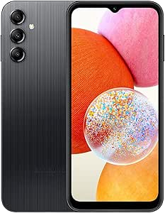

Wifair was launched in Brittany in 2020.
The company has a strong social commitment and produces smartphones designed to minimise environmental impact.
For equipment sold, spare parts are created and repair tutorials are offered so that you can repair them yourself instead of changing them, so that you can enjoy your phone for as long as possible without paying repair costs.
We sell all types of:


Repair procedure: